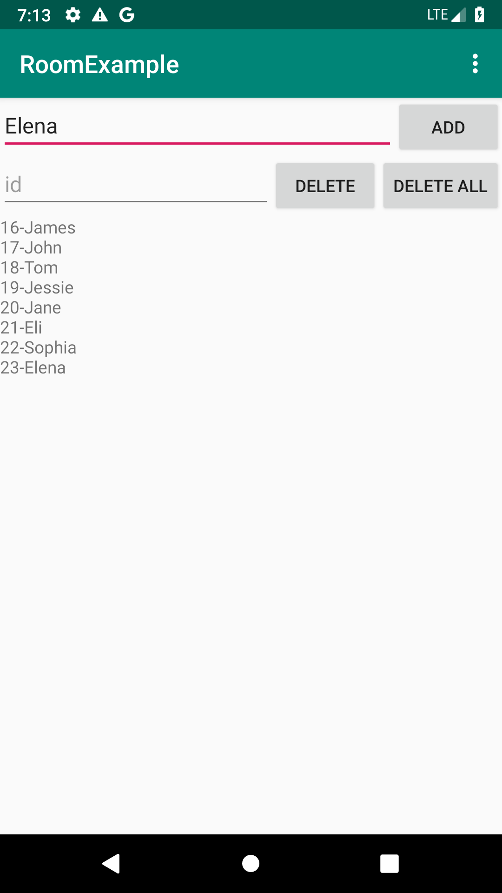

layout: true .top-line[] --- class: center, middle # Room (데이터베이스) --- ## Contents - Room 개요 - gradle 파일 설정 - Entity 생성 - DAO 생성 - Database 생성 - Migration - UI와 연결 --- ## Room 개요 - Room - SQLite를 쉽게 사용할 수 있는 데이터베이스 객체 매핑 라이브러리SQL - 쉽게 Query를 사용할 수 있는 API를 제공 - Query를 컴파일 시간에 검증함 - Query결과를 LiveData로하여 데이터베이스가 변경될 때 마다 쉽게 UI를 변경할 수 있음 - Room의 주요 3요소 - **@Database**: 클래스를 데이터베이스로 지정하는 annotation, RoomDatabase를 상속 받은 클래스여야 함 - Room.databaseBuilder를 이용하여 인스턴스를 생성함 - **@Entity**: 클래스를 테이블 스키마로 지정하는 annotation - **@Dao**: 클래스를 DAO(Data Access Object)로 지정하는 annotation - 기본적인 insert, delete, update SQL은 자동으로 만들어주며, 복잡한 SQL은 직접 만들 수 있음 --- ## gradle 파일 설정 - Room은 안드로이드 아키텍처에 포함되어 있음 - 사용하기위해 build.gradle 파일의 dependencies에 아래 내용을 추가해야 함 - Androidx 사용하는 경우를 가정함, Android Studio와 SDK는 최신 버전으로 사용 - Androidx를 사용하지 않는다면 메뉴 Refactor > Migrate to AndroidX 를 이용하여 사용할 수 있음 ```bash // Room components implementation "androidx.room:room-runtime:2.0.0-beta01" annotationProcessor "androidx.room:room-compiler:2.0.0-beta01" androidTestImplementation "androidx.room:room-testing:2.0.0-beta01n" // Lifecycle components implementation "androidx.lifecycle:lifecycle-extensions:2.0.0-beta01" annotationProcessor "androidx.lifecycle:lifecycle-compiler:2.0.0-beta01" ``` .footnote[https://github.com/jyheo/android-lecture-examples/blob/master/room/build.gradle] --- ## Entity 생성 - Entity는 테이블 스키마 정의 - CREATE TABLE student_table (id INTEGER PRIMARY KEY, name TEXT NOT NULL); ```java @Entity(tableName = "student_table") // 테이블 이름을 student_table로 지정함 public class Student { // (지정하지 않으면 클래스 이름 사용) @PrimaryKey(autoGenerate = true) // Primary Key를 지정하는 annotation int id; @NonNull // 이 속성은 null이 될 수 없음 @ColumnInfo(name = "name") // 테이블 속성 이름은 name으로 지정함 private String mName; Student(@NonNull String name) {mName = name;} // 생성자 public String getName() {return mName;} // getter 메소드 } ``` .footnote[https://github.com/jyheo/android-lecture-examples/blob/master/room/src/main/java/com/example/roomexample/Student.java] --- ## DAO 생성 - DAO는 interface나 abstract class로 정의되어야 함 - Annotation에 SQL 쿼리를 정의하고 그 쿼리를 위한 메소드를 선언 - 가능한 annotation으로 @Insert, @Update, @Delete, @Query가 있음 - ```@Query("SELECT * from table") List<Data> getAllData();``` - @Insert, @Update, @Delete는 SQL 쿼리를 작성하지 않아도 컴파일러가 자동으로 생성함 - @Insert나 @Update는 key가 중복되는 경우 처리를 위해 onConflict를 지정할 수 있음 - OnConflictStrategy.ABORT: key 충돌시 종류 - OnConflictStrategy.IGNORE: key 충돌 무시 - OnConflictStrategy.REPLACE: key 충돌시 새로운 데이터로 변경 - @Update나 @Delete는 primary key에 해당되는 튜플을 찾아서 변경/삭제 함 --- ## DAO 생성 - @Query로 리턴되는 데이터의 타입을 LiveData<>로 하면, 나중에 이 데이터가 업데이트될 때 Observer를 통해 할 수 있음 - ```@Query("SELECT \* from table") LiveData<List<Data>> getAllData(); ``` - @Query에 SQL을 정의할 때 메소드의 인자를 사용할 수 있음 - ```@Query("SELECT \* FROM student_table WHERE name = :sname") LiveData<List<Student>> selectStduentByName(String sname);``` - 인자 sname을 SQL에서 :sname으로 사용 ??? - LiveData는 Android architecture component로 안드로이 앱의 구조를 잘 설계하도록 도와주는 라이브러리들이다. - Android Jetpack에 포함되어, 안드로이드 버전과 상관 없이 업데이트가 됨 - https://developer.android.com/topic/libraries/architecture/ --- ## DAO 생성 ```java @Dao public interface MyDao { @Insert(onConflict = OnConflictStrategy.REPLACE) // INSERT, key 충돌이 나면 새 데이터로 교체 void insertStudent(Student student); @Query("DELETE FROM student_table") void deleteAllStudent(); @Query("SELECT * FROM student_table") LiveData<List<Student>> getAllStudents(); // LiveData<> 사용 @Query("SELECT * FROM student_table WHERE name = :sname") // 메소드 인자를 SQL문에서 :을 붙여 사용 LiveData<List<Student>> selectStduentByName(String sname); @Delete void deleteStudent(Student... student); // primary key is used to find the student @Insert(onConflict = OnConflictStrategy.REPLACE) void insertTeacher(Teacher teacher); //@Query("SELECT ") } ``` .footnote[https://github.com/jyheo/android-lecture-examples/blob/master/room/src/main/java/com/example/roomexample/MyDao.java] --- ## Database 생성 - RoomDatabase를 상속하여 자신의 Room 클래스를 만들어야 함 - 포함되는 Entity들과 데이터베이스 버전(version)을 @Database annotation에 지정함 - version이 기존에 저장되어 있는 데이터베이스보다 높으면, 데이터베이스를 open할 때 migration을 수행하게 됨 - Migration 수행 방법은 RoomDatabase 객체의 addMigration() 메소드를 통해 알려줌 - DAO를 가져올 수 있는 getter 메소드를 만듬 - 실제 메소드 정의는 자동으로 생성됨 - Room 클래스의 인스턴스는 하나만 있으면 되므로 Singleton 패턴을 사용 - Room 클래스의 객체 생성은 Room.databaseBuilder()를 이용함 --- ## Database 생성 ```java // Student와 Teacher entity를 갖고, version은 2 @Database(entities = {Student.class, Teacher.class}, version = 2) public abstract class MyRoomDatabase extends RoomDatabase { public abstract MyDao getMyDao(); // DAO getter private static volatile MyRoomDatabase INSTANCE; private static final Migration MIGRATION_1_2 = new Migration(1, 2) { /* 생략 */ }; static MyRoomDatabase getDatabase(final Context context) { // Singleton 패턴 구현 if (INSTANCE == null) { synchronized (MyRoomDatabase.class) { if (INSTANCE == null) { INSTANCE = Room.databaseBuilder(context.getApplicationContext(), MyRoomDatabase.class, "school_database") .addMigrations(MIGRATION_1_2) // Migration 방법 지정 .build(); } } } return INSTANCE; } } ``` .footnote[https://github.com/jyheo/android-lecture-examples/blob/master/room/src/main/java/com/example/roomexample/MyRoomDatabase.java] --- ## Migration - 앞에서 MyRoomDatabase객체 생성 후 addMigrations() 메소드를 호출하여 Migration 방법을 지정했음 - 여러개의 Migration 지정 가능 - ```myRoomDatabase.addMigrations(MIGRATION_1_2, MIGRATION_2_3); ``` ```java private static final Migration MIGRATION_1_2 = new Migration(1, 2) { // version 1->2 @Override public void migrate(SupportSQLiteDatabase database) { } }; private static final Migration MIGRATION_2_3 = new Migration(2, 3) { // version 2->3 @Override public void migrate(SupportSQLiteDatabase database) { database.execSQL("ALTER TABLE student_table " + " ADD COLUMN last_update INTEGER"); } }; ``` .footnote[https://medium.com/androiddevelopers/understanding-migrations-with-room-f01e04b07929] --- ## UI와 연결 - 안드로이드 아키텍처에 따라 Repository와 ViewModel을 사용하길 권장하지만 - 참고: https://codelabs.developers.google.com/codelabs/android-room-with-a-view/ - 여기에서는 Room과 LiveData 사용만 다룸 - RoomDatabase객체에게 DAO 객체를 받아오고, 이 DAO객체의 메소드를 호출하여 데이터베이스를 접근함 ```java MyRoomDatabase db = MyRoomDatabase.getDatabase(this); MyDao mMyDao = db.getMyDao(); LiveData<List<Student>> mAllStudents = mMyDao.getAllStudents(); // LiveData는 Observer를 통해 비동기적으로 데이터를 가져옴 mMyDao.insertStudent(new Student("john")); // (주의) insert, delete와 같이 UI를 블록할 수 있는 // DAO 메소드를 UI 스레드에서 바로 호출하면 안됨 ``` --- ## UI와 연결 - LiveData<> 타입으로 리턴되는 DAO 메소드 경우 - observe() 메소드를 이용하여 Observer를 지정 - 데이터가 변경될 때마다 자동으로 Observer의 onChanged()가 호출됨 - LiveData<>를 리턴하는 DAO 메소드는 Observer를 통해 비동기적으로 데이터를 받기 때문에, UI 스레드에서 호출해도 문제 없음 ```java MyRoomDatabase db = MyRoomDatabase.getDatabase(this); mMyDao = db.getMyDao(); LiveData<List<Student>> mAllStudents = mMyDao.getAllStudents(); // LiveData 리턴 mAllStudents.observe(this, new Observer<List<Student>>() { // observe() 호출하여 Observer 등록 @Override public void onChanged(@Nullable List<Student> students) { // onChanged() 구현 if (students == null) return; // 데이터를 UI에 업데이트 } }); ``` .footnote[https://github.com/jyheo/android-lecture-examples/blob/master/room/src/main/java/com/example/roomexample/MainActivity.java#L71] --- ## UI와 연결 - LiveData가 아닌 데이터나 Void 리턴되는 DAO 메소드 경우 - Insert, Update, Delete 작업은 호출한 스레드가 일시적으로 블록될 수 있음 - 호출 스레드가 UI 스레드라면 UI가 응답 없음 상태가 될 수 있음 - 이런 작업은 반드시 비동기적으로 호출되어야 함 - 비동기 호출을 간단히 할 수 있는 AsyncTask를 사용 ```java private static class InsertTask extends AsyncTask<Student, Void, Void> { private MyDao mMyDao; InsertTask(MyDao dao) { mMyDao = dao; } @Override protected Void doInBackground(Student... params) { mMyDao.insertStudent(params[0]); return null; } } ``` .footnote[https://github.com/jyheo/android-lecture-examples/blob/master/room/src/main/java/com/example/roomexample/MainActivity.java#L22] --- ## UI와 연결 - AysncTask를 MainActivity에서 호출 ```java private MyDao mMyDao; @Override protected void onCreate(Bundle savedInstanceState) { super.onCreate(savedInstanceState); setContentView(R.layout.activity_main); MyRoomDatabase db = MyRoomDatabase.getDatabase(this); mMyDao = db.getMyDao(); Button add = findViewById(R.id.add_student); add.setOnClickListener(new View.OnClickListener() { @Override public void onClick(View v) { EditText edit_word = findViewById(R.id.edit_name); String name = edit_word.getText().toString(); new InsertTask(mMyDao).execute(new Student(name)); // 앞에서 정의한 AsyncTask를 실행 } }); // 이하 생략 } ``` .footnote[https://github.com/jyheo/android-lecture-examples/blob/master/room/src/main/java/com/example/roomexample/MainActivity.java#L92] --- ## 전체 예제 코드 - https://github.com/jyheo/android-lecture-examples/tree/master/room 